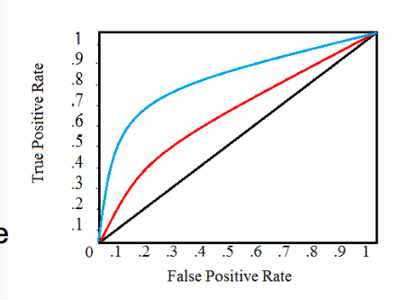

考試＆作業重點
Testing data 不該被動到，因為正常model的data是未知的，不能調整他，這樣出來performance會很高，但是因為test已被動到。
所以應該要2 先，然後1只能upsampling X train
NOTE FROM WEB
監督式學習(Supervised Learning)
The training data (features) are accompanied by labels
New data is classified based on the training set
依據應用方面可以在方為分類(Classification)以及回歸(Regression)。
- 監督式分類(Supervised Classification): 參數型分類(parameter-based classification)和非參數型分類(non-parameter-based classification)
- 參數型: 高斯分類器(Gaussian Classifier)、邏輯迴歸分析(logistic regression) 或是支撐向量機(Support Vector Machine) 、感知器（Perceptron）。
- 非參數型: K最鄰近法(K-nearest neighbors)。
- 監督式回歸(Supervised Regression): 線性回歸(Linear Regression)、支撐向量回歸(Support Vector Regression)
”Right answer given” → Regression and Classification
非監督式學習(Un-supervised learning)
主要是叢集分析(Clustering Analysis): k平均群聚法(k-means)、模糊f平均法(fuzzy c-means)、高斯混和模型(Gaussian Mixture Model)
”No right answer given” → Clustering
Classification
先建立model（在已有分類標準下），再使用model來分類（對新數據進行劃分）
Decision Tree : 選擇好的切割點，決策次數越少越好
Entropy（亂度）： Info(D) 代表 D 的亂度，D 之中的有m類。
Info(D) = -sigma pi log 2(pi)
• 𝑃 代表第 i 類出現的機率，就是該類在資料中的比例。
SVM
https://mropengate.blogspot.com/2015/03/support-vector-machines-svm.html>
評價模型
[ ] ##### 用confusion metrics、precision、recall等等
| | Predicted as Positive | Predicted as Negative | | | ------------------- | --------------------- | --------------------- | ---- | | Labeled as Positive | True Positive(TP) | False Negative(FN) | P | | Labeled as Negative | False Positive(FP) | True Negative(TN) | N | | | P' | N' | ALL |
* 真正(True Positive, TP)：被模型分类正确的正样本； * 假负(False Negative, FN)：被模型分类错误的正样本； * 假正(False Positive, FP)：被模型分类的负样本； * 真负(True Negative, TN)：被模型分类正确的负样本；
进一步可以推出这些指标：
Sensitivity: True Positive recognition rate Sensitivity = TP/P
Specificity: True Negative recognition rate Specificity = TN/N
Precision :被猜成是positive的有多少比例真的是positive Precision = TP/ TP+FP
Recall :真的是positive的有多少比例被猜成是positive Recall = TP/P = Sensitivity
Perfect score is 1.0 for Precision and Recall
全部都猜p，但根本不精準，所以精確跟recall都要考慮
[ ] ##### Holdout & Cross Validation
Holdout: 將原始數據劃分成兩部分，大個做training，小的當test set
Cross : 劃分成k部分，每次疊代中，將k-1做training（k通常是10），剩下一個做test，接著重複k次，直到每個部分都做過test，得到k個評價指標，再計算平均值。
Implementation Tips:
Do shuffle (or randomly partition) the dataset before k-fold cross validation (Also can avoid imbalance issue)
Boostrap: Bootstrapping是一种重采样技术，翻译成自助法。它通过采样技术从原始的单个数据集上产生多个新的数据集，每个新的数据集称为一个bootstrapped dataset，并且每个新的数据集大小与原始数据集大小相等。这样，每个新的数据集都可以用来对模型进行评价，从而可以得到多个评价值，进一步可以得到评价方差与置信区间
ROC CURVE (Receiver OperatingCharacteristics): 曲線下的面積是精準度的衡量，越接近對角線（即區域越接近0.5），模型越不准確，縱軸表示真正的正確率，橫軸代表誤報率，該圖還顯示了對角線，具有完美精度的模型將具有1的面積
classification p.136 table
https://blog.csdn.net/heyongluoyao8/article/details/49408319
3.1 過適 (overfitting)
知識發掘的方法在建立模型的過程中容易出現過適的情形，模型可能陷入只能解釋在訓練集樣本的關聯，而沒辦法一體適用。也就是說，機器學習所學到的假設(Hypothesis)過度貼近訓練資料(Training Data)，而導致測試資料(Testing Data)錯誤率變得更大。
一個荒謬的模型模型只要足夠複雜，是可以完美地適應訓練資料。過適一般可以識為違反奧卡姆剃刀原則。為了避免過適現象，須要使用額外的技巧(如交叉驗證、early stopping、貝斯信息量準則、赤池信息量準則或model comparison)以指出何時會有更多訓練而沒有導致更好的一般化。
奧卡姆剃刀原則 : 若無必要，勿增實體。如果對於同一現象有兩種不同的假說，我們應該採取比較簡單的那一種。
Ensemble Learning基本條件是:每個分類器之間應該要有差異，每個分類器準確率需大於0.5。
Bagging （Boostrap Aggregation）
Bagging概念很簡單，從訓練資料中隨機抽取(取出後放回，n<N)樣本訓練多個分類器(要多少個分類器自己設定)，每個分類器的權重一致最後用投票方式(Majority vote)得到最終結果，而這種抽樣的方法在統計上稱為bootstrap。
Bagging的優點在於原始訓練樣本中有噪聲資料(不好的資料)，透過Bagging抽樣就有機會不讓有噪聲資料被訓練到，所以可以降低模型的不穩定性。
Boosting
Boosting算法是將很多個弱的分類器(weak classifier)進行合成變成一個強分類器(Strong classifier)，和Bagging不同的是分類器之間是有關聯性的，是透過將舊分類器的錯誤資料權重提高，然後再訓練新的分類器，這樣新的分類器就會學習到錯誤分類資料(misclassified data)的特性，進而提升分類結果。
將錯誤的資料權重加大 :由於Boosting將注意力集中在分類錯誤的資料上，因此Boosting對訓練資料的噪聲非常敏感，如果一筆訓練資料噪聲資料很多，那後面分類器都會集中在進行噪聲資料上分類，反而會影響最終的分類性能。
Adaboost
AdaBoost算法，是一種改進的Boosting分類算法。方式是提高被前幾個分類器線性組合的分類錯誤樣本的權重，這樣做可以讓每次訓練新的分類器的時後都聚焦在容易分類錯誤的訓練樣本上。每個弱分類器使用加權投票機制取代平均投票機制，只的準確率較大的弱分類器有較大的權重，反之，準確率低的弱分類器權重較低。
AdaBoost的手法: 讓判斷錯誤的train data提高權重，讓產生新的權重的training set讓舊的分類器f1(x) fail掉，但在新的分類器上就去加強學這些權重較大的training set。
Random Forest
Each classifier in the ensemble is a decision tree classifier and is generated using a random selection of attributes at each node to determine the split
During classification, each tree votes and the most popular class is returned
Comparable in accuracy to Adaboost, but more robust to errors and outliers
Insensitive to the number of attributes selected for consideration at each split, and faster than bagging or boosting
Bagging與Boosting的區別之處:
訓練樣本:
- Bagging: 每一次的訓練集是隨機抽取(每個樣本權重一致)，抽出可放回，以獨立同分布選取的訓練樣本子集訓練弱分類器。
- Boosting: 每一次的訓練集不變，訓練集之間的選擇不是獨立的，每一是選擇的訓練集都是依賴上一次學習得結果，根據錯誤率(給予訓練樣本不同的權重)取樣。
分類器:
- Bagging: 每個分類器的權重相等。
- Boosting: 每個弱分類器都有相應的權重，對於分類誤差小的分類器會有更大的權重。
每個分類器的取得:
- Bagging: 每個分類器可以並行生成。
- Boosting: 每個弱分類器只能依賴上一次的分類器順序生成。
- Note: 1. Random Forest : Bagging + Decision tree 2. Boosting Tree : AdaBoost + Decision tree 3. GBDT : Gradient Boost + Decision tree
Kernel function
Kernel trick在機器學習的角色就是希望當不同類別的資料在原始空間中無法被線性分類器區隔開來時，經由非線性投影後的資料能在更高維度的空間中可以更區隔開。
下圖是一般看到kernel介紹都會看到的圖，我們無法在原始空間(Rd)中適當的找到一個線性分類器將兩類區隔開，這時後此需要找到一個非線性投影(φ)將資料進行轉換到更高維度的空間，此時在高維度的空間中只需要一個線性分類器/hyperplane就可以完美分類。
Kernel的手法只是將資料投到更高維度的空間，然後在這高維度的空間進行你想做的事情，不一定要直接在高維度空間做分類(此例是在高維度空間分類)，也可以在高維度空間進行降維(dimension reduction)
非監督式學習? 就是你得到的資料你沒有任何Ground truth，你只有資料本身。*
K-means Clustering這個方法概念很簡單，一個概念「物以類聚」。男生就是男生，女生就是女生，男生會自己聚成一群，女生也會自己聚成一群。